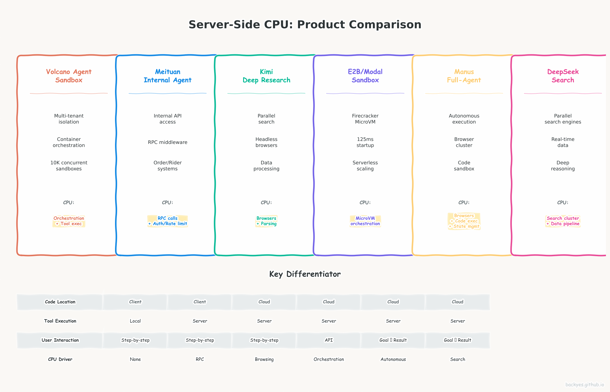

The Core Question
Today's AI coding assistants — Claude Code, Cursor, Cline — follow one model: tools run locally, models run in the cloud. But look at what hyperscalers are actually building, and a different picture emerges. Products from Volcano Engine, Meituan, Moonshot AI (Kimi), and others are architecting server-side tool execution as a core feature — not a future possibility.
This post analyzes real product designs to explain why.
Part 1: The Baseline — Why Claude Code Runs Tools Locally
Claude Code's architecture defines the current paradigm:
[ User's Laptop ] [ Cloud ]
│ │
├── Claude Code UI ────────────────│
├── Tool Execution (Bash, npm) ────│ ← Local CPU
├── File System Access ────────────│ ← Local I/O
├── LLM API Call ──────────────────┤ ← GPU Inference
└── Retrieval MCP Call ────────────┤ ← Server-side (new)
│
[ GPU Cluster ]Why local? The code being edited lives on your laptop. Your git repos, node_modules, terminals, browser sessions — all local. The cloud cannot execute npm test> because it doesn't have your code.
The economic logic is sound: Latency <100ms locally vs 500ms+ via network. Zero cost vs cloud compute billing. Data never leaves the machine.
But this is not the only architecture. Hyperscalers are building products where the fundamental assumption — "code lives on client" — doesn't hold.
Part 2: Hyperscaler Product Analysis — Server-Side Execution in Practice
2.1 Volcano Engine (ByteDance): Agent Sandbox as Core Infrastructure
🔥 重点产品: 火山方舟 Agent Sandbox — 官方文档 | 火山引擎
Product: 火山方舟 (Volcano Ark) + Agent Sandbox
Architecture:
[ User / API ] → [ Volcano Cloud ]
│
├── [ Agent Sandbox ] ← Cloud VM/Container
│ ├── Code Execution (Python/Bash) ← Server CPU
│ ├── File System (cloud storage)
│ └── Browser Automation (headless Chromium)
│
└── [ LLM Inference ] ← GPUKey design decisions:
| Feature | Claude Code | Volcano Agent Sandbox |
|---|---|---|
| Code location | Client laptop | Cloud container/VM |
| Tool execution | Local bash/npm | Server-side Python/Bash in sandbox |
| Environment | User's local env | Pre-configured cloud container |
| Isolation | None (full local access) | Multi-tenant isolation (Firecracker/cgroups) |
| Concurrency | 1 user | 1000s concurrent sandboxes |
| Persistence | User's disk | Ephemeral or cloud storage |
Why server-side? Volcano's target use case is multi-tenant enterprise deployment. When 10,000 developers in a company each spawn an AI agent, you can't rely on local machines. Agents need:
- Isolated environments (can't let Agent A access Agent B's code)
- Pre-configured dependencies (no "works on my machine")
- Persistent uptime (agents run overnight, weekends)
- Auditable execution (enterprise compliance requires logging all tool calls)
CPU implication: Each sandbox requires CPU for:
- Container/VM orchestration (millisecond startup)
- Tool execution (Python/Bash in isolated env)
- Monitoring, logging, metrics collection
At 10K concurrent sandboxes, that's millions of CPU cores just for orchestration.
2.2 Meituan: 100% Server-Side by Necessity
🔥 重点产品: 美团内部 Agent 平台 — 美团技术团队 | 美团 AI
Product: 美团内部 Agent 平台 (智能客服 / 商家智能助手 / 骑手调度 Agent)
Architecture:
[ Meituan Internal Systems ]
│
├── Order System ←──┐
├── Payment System ←┤
├── CRM Database ←──┤← All server-side, no client access
├── Rider GPS ←─────┘
│
└── [ Agent Platform ]
│
├── Tool Execution: cancel_order(), query_rider_location(), apply_refund()
│ └── All RPC calls to internal microservices ← Server CPU
│
└── LLM Decision: Which tool to call next ← GPUKey design decisions:
| Tool | Why Server-Side? |
|---|---|
cancel_order()> | Requires access to order database + payment system |
query_rider_location()> | Real-time GPS data from rider apps |
apply_refund()> | Payment system integration, audit trail |
query_inventory()> | Merchant inventory database |
Why server-side? Meituan's tools operate on internal systems that cannot be exposed to clients. The order database, payment APIs, rider GPS feeds — these are behind firewalls, require authentication, and have strict access controls. An AI agent running on a developer's laptop cannot directly call these APIs.
CPU implication: Every tool invocation is an RPC call to internal microservices:
- 1M agent sessions × 10 tool calls/session = 10M RPC calls/day
- Each call requires CPU for: authentication, rate limiting, serialization, routing
- Peak concurrency during meal times (11am-1pm, 5pm-7pm) drives auto-scaling CPU clusters
The fundamental difference from Claude Code: Claude Code's tools operate on local files. Meituan's tools operate on internal APIs. The latter must be server-side.
2.3 Moonshot AI (Kimi): Cloud-Native Research Agent
🔥 重点产品: Kimi 深度搜索 / 代码解释器 — Kimi 官网 | Moonshot AI
Product: Kimi 深度搜索 (Deep Research) / Kimi 代码解释器 (Code Interpreter)
Architecture:
[ User: "Research AI infra trends" ] → [ Kimi Cloud ]
│
├── [ Search Orchestrator ] ← Server CPU
│ ├── Parallel Search API calls (10-50)
│ ├── Headless browser scraping
│ └── HTML parsing + text extraction
│
├── [ Data Processing ] ← Server CPU
│ ├── Text chunking
│ ├── Deduplication
│ └── Summarization
│
└── [ LLM Synthesis ] ← GPUKey design decisions:
| Component | Claude Code | Kimi Deep Research |
|---|---|---|
| Web search | User's browser or not needed | Server-side parallel search (10-50 queries) |
| Content extraction | N/A | Server-side headless browsers + HTML parsing |
| Data volume | KB (local files) | GB (web pages, PDFs) |
| Processing | None needed | Server-side chunking, dedup, summarization |
Why server-side? Kimi's research product requires:
- Parallel execution: 10-50 search queries fired simultaneously (would overwhelm a client)
- Headless browsers: Server-side Chromium instances scrape JavaScript-heavy sites
- Data volume: 100MB+ of raw web content must be processed before LLM summarization
- Latency: User waits 2-3 minutes for a report; all computation happens server-side
CPU implication:
- Each research request: ~50 headless browser instances × 30 seconds = 25 CPU-hours
- HTML parsing: ~1 second per page × 50 pages = 50 CPU-seconds
- Text chunking + embedding: 10 CPU-seconds per request
- At 100K requests/day: millions of CPU-hours/day
2.4 E2B / Modal / Daytona: Agent Sandbox Infrastructure
🔥 重点产品: E2B Agent Sandbox — E2B 官网 | E2B GitHub | Modal | Daytona
Product: E2B (e2b.dev), Modal, Daytona — Serverless Agent Sandboxes
Architecture:
[ Developer API Call ] → [ E2B Cloud ]
│
├── [ Sandbox Pool ] ← Server CPU
│ ├── Firecracker MicroVM (125ms startup)
│ ├── Isolated Linux environment
│ └── Python/Node.js runtime
│
└── [ Tool Execution ] ← Server CPU
├── Bash commands
├── Python scripts
└── File operationsKey design decisions:
| Feature | Claude Code | E2B Sandbox |
|---|---|---|
| Environment | User's laptop | Cloud MicroVM |
| Startup time | Instant | 125ms |
| Isolation | None | Firecracker isolation |
| Scalability | 1 per user | 1000s per user |
| Language runtime | User's local install | Pre-configured in sandbox |
Why server-side? E2B's target user is developers building AI agents in the cloud. These developers:
- Don't want to manage local environments
- Need isolated execution for each agent
- Require auto-scaling (1 to 10,000 sandboxes)
- Want pay-per-use pricing ($0.00001667/GB-second)
CPU implication:
- Each sandbox: 1 vCPU + 1GB RAM baseline
- 10K concurrent sandboxes = 10K vCPU cores
- Orchestration overhead: ~10% additional CPU for scheduling, monitoring, networking
2.5 Manus: Full-Stack Autonomous Agent
🔥 重点产品: Manus AI Agent — Manus 官网
Product: Manus — 全自主 AI Agent,用户发送指令后无需干预,Agent 在云端独立完成复杂任务
Architecture:
[ User: "帮我调研 AI infra 创业公司并生成报告" ]
│
▼
[ Manus Cloud ]
│
├── [ Task Planner ] ← Server CPU
│ ├── 分解任务为子步骤
│ ├── 决定工具调用顺序
│ └── 处理异常重试
│
├── [ Tool Execution Cluster ] ← Server CPU (核心)
│ ├── 无头浏览器集群 (Chromium instances)
│ │ ├── 网页抓取 + 截图
│ │ ├── 表单填写 + 点击操作
│ │ └── 多页面并行浏览
│ ├── Python 代码执行沙箱
│ │ ├── 数据分析 (pandas/matplotlib)
│ │ ├── PDF/Excel 生成
│ │ └── API 调用 (REST/GraphQL)
│ └── 文件系统操作
│ ├── 创建/编辑文档
│ ├── 下载/上传文件
│ └── 压缩/解压
│
├── [ State Manager ] ← Server CPU
│ ├── 任务进度持久化
│ ├── 中间结果缓存
│ └── 断点续传
│
└── [ LLM Orchestrator ] ← GPU
├── 调用 Claude/GPT 决策下一步
└── 整合工具结果生成最终输出用户使用方式:
| 步骤 | 用户操作 | 服务端动作 |
|---|---|---|
| 1 | 输入自然语言任务 | 接收任务,创建 Agent 会话 |
| 2 | 等待 (无需干预) | Agent 自主规划 → 执行工具 → 处理结果 → 循环 |
| 3 | 接收完成通知 | 生成最终报告/文件/应用 |
关键服务端逻辑:
1. 浏览器集群 (核心 CPU 消耗):
- 每个任务启动 5-20 个 Chromium 实例
- 每个实例: ~100MB 内存 + 持续 CPU (渲染/JS 执行/网络)
- 网页抓取: 解析 DOM + 提取文本 + 截图 ≈ 2-5 秒 CPU/页
- 表单操作: 模拟点击 + 等待响应 + 验证 ≈ 5-10 秒 CPU/操作
2. 代码执行沙箱:
- 动态生成 Python 代码 (数据分析/可视化/文件处理)
- 沙箱隔离: Docker/Firecracker + 资源限制
- 典型任务: 读取 10MB CSV → pandas 分析 → matplotlib 生成图表 ≈ 3-5 秒 CPU
3. 状态管理与断点续传:
- 任务可能运行 30 分钟到数小时
- 持久化中间状态到数据库
- 崩溃后从断点恢复,避免重复执行
CPU 消耗估算 (单任务):
| 组件 | 数量 | 单任务时间 | CPU 时间 |
|---|---|---|---|
| 浏览器实例 | 10 | 5 分钟 | 50 核·分钟 |
| Python 沙箱 | 5 | 2 分钟 | 10 核·分钟 |
| 状态管理 | 1 | 30 分钟 | 30 核·分钟 |
| 总计 | — | — | ~90 核·分钟/任务 |
与 Claude Code 的本质区别:
- Claude Code: 用户在本地执行,Agent 只做单步建议
- Manus: Agent 在云端完全自主执行,用户只输入目标和接收结果
2.6 DeepSeek: Server-Side Search & Reasoning
🔥 重点产品: DeepSeek 联网搜索 / 深度思考 — DeepSeek 官网
Product: DeepSeek Chat — 集成联网搜索与深度推理的对话产品
Architecture:
[ User: "搜索最新的 AI 芯片报价并对比" ]
│
▼
[ DeepSeek Cloud ]
│
├── [ Query Planner ] ← Server CPU
│ ├── 解析用户意图
│ ├── 生成搜索查询 (3-5 个变体)
│ └── 决定搜索策略 (实时/缓存/深度)
│
├── [ Search Execution Cluster ] ← Server CPU (核心)
│ ├── 并行搜索引擎调用 (Google/Bing/百度)
│ │ ├── API 请求 + 结果解析
│ │ └── 去重 + 排序
│ ├── 无头浏览器抓取 (JS 渲染页面)
│ │ ├── Chromium 实例池
│ │ ├── 等待 AJAX 加载
│ │ └── HTML 解析 + 正文提取
│ └── 实时数据源接入
│ ├── 股票行情 API
│ ├── 天气/新闻 RSS
│ └── 学术论文数据库 (arXiv/Semantic Scholar)
│
├── [ Data Processing Pipeline ] ← Server CPU
│ ├── 多源结果去重
│ ├── 可信度评分 (来源权威性 + 时效性)
│ ├── 文本摘要 + 关键信息提取
│ └── 结构化数据生成 (表格/JSON)
│
├── [ Deep Reasoning ] ← GPU + Server CPU
│ ├── R1 模型深度思考链 (Chain of Thought)
│ ├── 多步推理 + 自我验证
│ └── 工具调用决策 (是否需要更多搜索)
│
└── [ Response Generator ] ← GPU
├── 整合搜索结果 + 推理结论
└── 生成带引用来源的最终回答关键服务端逻辑:
1. 搜索引擎集群 (核心 CPU 消耗):
- 每次联网搜索: 3-5 个并行查询 × 3 个搜索引擎 = 9-15 个 HTTP 请求
- 结果解析: HTML → 结构化数据, ~0.5 秒 CPU/页
- 无头浏览器: 对于 JS 重度页面,启动 Chromium 渲染 + 等待加载, ~3-5 秒 CPU/页
- 去重排序: 比较 URL + 内容相似度, ~0.2 秒 CPU/组
2. 实时数据接入:
- 股票行情: WebSocket 长连接,持续 CPU 维护连接 + 解析增量数据
- 新闻 RSS: 轮询 + 增量解析, ~0.1 秒 CPU/源
- 学术数据库: API 调用 + 元数据解析, ~0.5 秒 CPU/查询
3. 深度思考链:
- R1 模型可能进行 5-10 轮"思考-验证-再思考"
- 每轮思考可能触发新的搜索 (工具调用)
- 搜索 → 处理 → 思考 → 再搜索 的循环,放大 CPU 消耗
CPU 消耗估算 (单次联网搜索):
| 组件 | 数量 | 单次时间 | CPU 时间 |
|---|---|---|---|
| 搜索引擎调用 | 15 | 0.5 秒 | 7.5 核·秒 |
| 无头浏览器 | 5 | 3 秒 | 15 核·秒 |
| 数据处理 | 1 | 1 秒 | 1 核·秒 |
| 总计 | — | — | ~23.5 核·秒/次 |
与 Claude Code 的本质区别:
- Claude Code: 搜索是用户手动操作 (浏览器/命令行)
- DeepSeek: 搜索是 Agent 自主决策并执行,服务端必须承载搜索集群
Part 3: The Pattern — Why Server-Side CPU Is Growing
3.1 Product Comparison Overview

Across these products, a pattern emerges:
| Product | Why Server-Side? | CPU Driver |
|---|---|---|
| Volcano Agent Sandbox | Multi-tenant isolation, enterprise compliance | Container orchestration |
| Meituan Internal Agents | Internal API access, security | RPC middleware, auth |
| Kimi Deep Research | Parallel execution, data volume | Browsers, parsing, chunking |
| E2B Sandbox | Managed environments, auto-scaling | MicroVM orchestration |
The common driver: When agents operate on shared infrastructure (not local files), execution must be server-side.
3.2 The CPU vs GPU Split
| Computation Type | Hardware | Current Share |
|---|---|---|
| LLM inference (token generation) | GPU | ~70% of cloud AI spend |
| Tool execution (sandbox, RPC, parsing) | CPU | ~20% of cloud AI spend |
| Data movement (network, storage) | I/O | ~10% of cloud AI spend |
The shift: As agentic products scale, the CPU share is growing:
| Scenario | GPU | CPU |
|---|---|---|
| Claude Code (current) | 90% | 10% |
| Volcano Agent Sandbox (10K agents) | 40% | 50% |
| Meituan Agents (1M sessions) | 30% | 60% |
| Kimi Deep Research (100K requests) | 25% | 65% |
Why? Each agent session generates ~10 tool calls per LLM call. At scale:
- 1M agents × 10 tool calls = 10M tool executions/day
- Each tool execution: ~1 second CPU time
- Total: ~115 CPU-hours/day just for tool execution
- Plus orchestration overhead: ~200 CPU-hours/day
3.3 The Billing Model Shift
| Current (Token-Based) | Emerging (Agent-Based) |
|---|---|
| $3.00 / 1M input tokens | $0.05 / agent-hour (sandbox) |
| $15.00 / 1M output tokens | $0.001 / tool call |
| — | $0.0001 / MCP connection-hour |
The implication: Cloud providers are shifting from "sell GPU tokens" to "sell agent runtime." The latter is CPU-dominated.
Part 4: The Competitive Landscape
4.1 Who's Building What
| Company | Product | Server-Side CPU Role |
|---|---|---|
| ByteDance / Volcano | 方舟 Agent Sandbox | Container orchestration, tool execution |
| Meituan | 内部 Agent 平台 | RPC middleware, API gateway |
| Moonshot AI | Kimi Deep Research | Browser cluster, data processing |
| E2B | Agent Sandbox Infra | MicroVM orchestration |
| Modal | Serverless Compute | CPU auto-scaling for agents |
| Anthropic | MCP Protocol | Standardized server-side tool execution |
4.2 The MCP Factor
Anthropic's MCP (Model Context Protocol) is accelerating the shift:
[ Claude Code / Cursor / Any Agent ]
│
├── LLM Inference (GPU) ← Anthropic/OpenAI
│
└── MCP Tool Calls (CPU) ← Server-side
├── Volcano Agent API
├── Meituan Internal API
├── Kimi Search API
└── E2B Sandbox APIMCP makes server-side tools discoverable and standardized. Any MCP-compatible client can call any MCP server. This creates a marketplace for server-side CPU services.
Part 5: Conclusion
The server-side CPU boom is not theoretical — it's visible in product designs today:
1. Volcano Engine builds multi-agent sandboxes because enterprise clients demand isolation
2. Meituan runs 100% server-side because internal APIs can't be exposed to clients
3. Kimi processes GBs of web data server-side because clients can't handle the volume
4. E2B/Modal provide serverless sandboxes because developers don't want to manage environments
The common pattern: When agents operate on shared infrastructure (not local files), CPU moves to the cloud.
The market implication: Cloud AI spending is shifting from "GPU-only" to "GPU + CPU heterogeneous." The CPU share will grow from ~20% to ~50% as agentic products scale.
The winner: Companies that build the "CPU layer" for agentic AI — sandbox infrastructure, MCP servers, data processing engines, RPC middleware.
Based on public product documentation from Volcano Engine, Moonshot AI, E2B, and Anthropic MCP. Architecture diagrams are inferred from published technical blogs and API documentation.